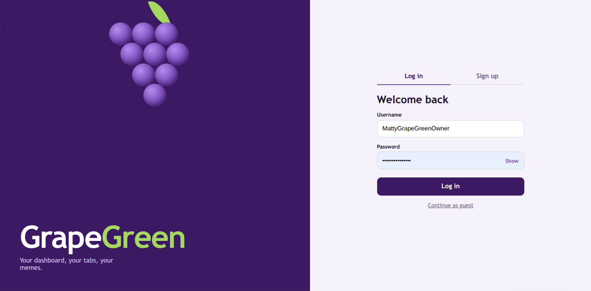

Welcome to the official GrapeGreen Dashboard. Explore our growing web app community where you can participate in global chat, check out the custom wall of memes, generate QR codes, study atomic science formulas, and customize your own user interface profile dashboard. Sign up or log in to manage your account.